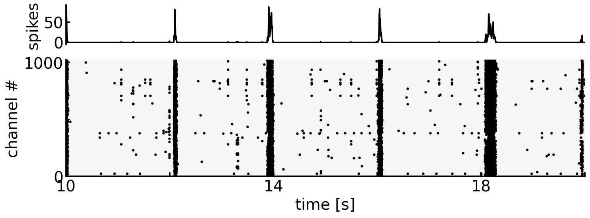
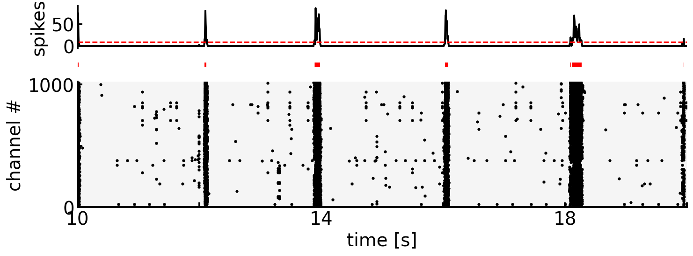
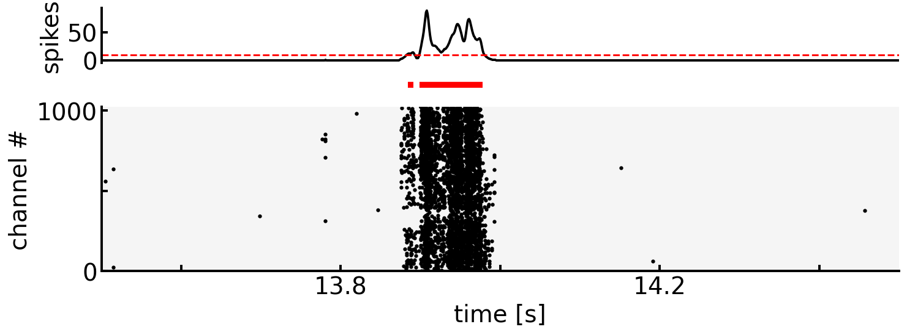
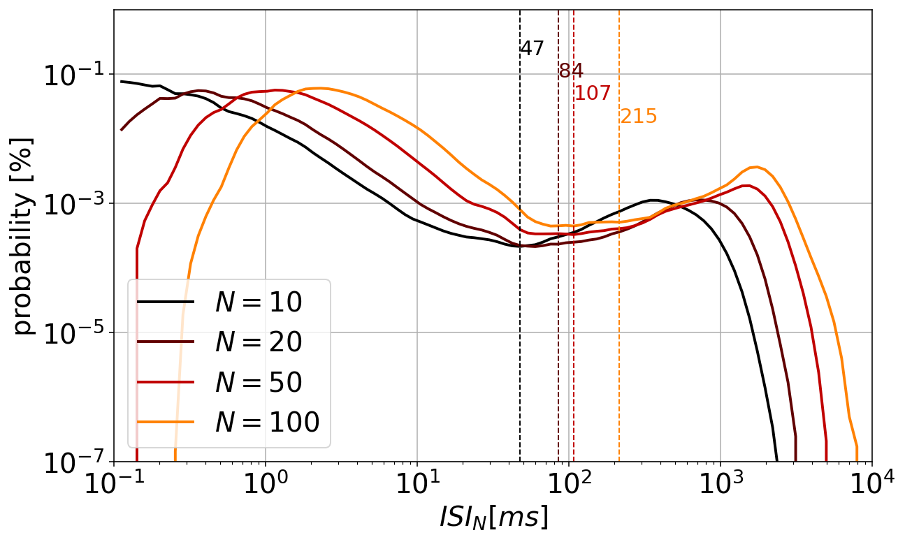
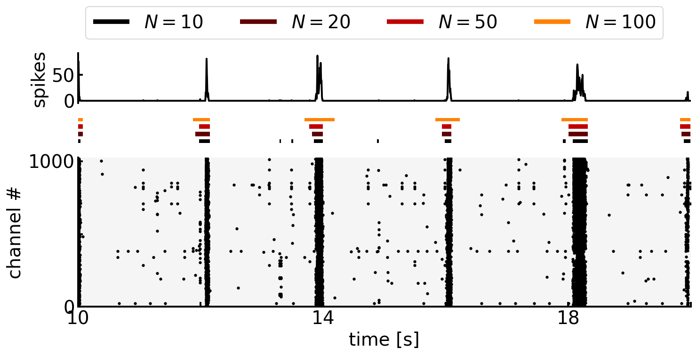
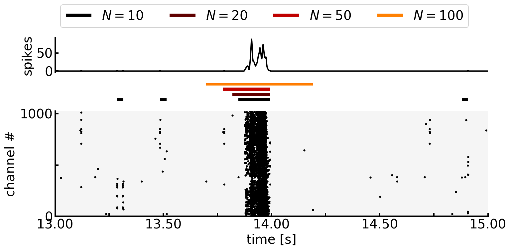

3. Burst Detection
Contents
3. Burst Detection#
ラット中枢神経細胞の分散培養系による神経活動の特徴の一つは，同期バーストである．
同期バースト（network burstまたは単にburst）は，spikeが高頻度に発火する現象が神経ネットワークの広範囲に伝達する現象を指す．
import pandas as pd
import numpy as np
import matplotlib.pyplot as plt
from scipy.ndimage import gaussian_filter
plt.rcParams['font.size'] = 20
plt.rcParams['figure.dpi'] = 140
datadir = '../datasets/01/'
df_map = pd.read_csv(datadir + 'mapping.csv', index_col=0)
df_sp = pd.read_csv(datadir + 'spikes.csv', index_col=0)
def rasterplot(ax: plt.Axes, df: pd.DataFrame, start: float, end: float, x: str='spiketime', y: str='channel', **kwargs):
df_ = df.query(f'{start} < {x} < {end}')
return ax.scatter(x=df_[x], y=df_[y], **kwargs)
def spikehist(ax: plt.Axes, df: pd.DataFrame, start: float, end: float, bin_width: float, x: str='spiketime', y: str='channel', smooth=True, **kwargs):
df_ = df.query(f'{start} < {x} < {end}')
hist, edges = np.histogram(df_[x], range=(start, end), bins=int((end-start)/bin_width))
if smooth: hist = gaussian_filter(hist, sigma=[2]) # smoothing with gaussian filter
return ax .plot(edges[1:], hist, **kwargs)
def rastergram(ax1: plt.Axes, ax2: plt.Axes, df: pd.DataFrame, start: float, end: float,
bin_width: float=0.01, x: str='spiketime', y: str='channel', smooth: bool=True):
p1 = spikehist(ax1, df, start, end, bin_width, x, y, smooth, linewidth=2.0, c='k')
p2 = rasterplot(ax2, df, start, end, x, y, c='k', s=5)
ax1.set_xlim(start, end)
ax1.set_xticks([])
ax1.set_ylabel('spikes')
ax1.spines['right'].set_visible(False)
ax1.spines['top'].set_visible(False)
ax1.spines['bottom'].set_visible(False)
ax1.spines['left'].set_linewidth(2)
ax1.tick_params(width=2.0, length=5.0, direction='in')
ax2.spines['right'].set_visible(False)
ax2.spines['top'].set_visible(False)
ax2.spines['left'].set_linewidth(2)
ax2.spines['bottom'].set_linewidth(2)
ax2.set_xlim(start, end)
ax2.set_xlabel('time [s]')
for i, tick in enumerate(ax2.xaxis.get_ticklabels()):
if i % 2 != 0:
tick.set_visible(False)
ax2.set_ylim(0, 1024)
ax2.set_ylabel('channel #')
ax2.set_yticks([0, 500, 1000])
for i, tick in enumerate(ax2.yaxis.get_ticklabels()):
if i % 2 != 0:
tick.set_visible(False)
ax2.set_facecolor('whitesmoke')
ax2.tick_params(width=2.0, length=5.0, direction='in')
return p1, p2
fig, (ax1, ax2) = plt.subplots(2, figsize=(16, 4), gridspec_kw={'height_ratios': [1, 3]})
start, end = 10.0, 20.0
rastergram(ax1=ax1, ax2=ax2, df=df_sp, start=start, end=end, bin_width=0.001)
plt.subplots_adjust(hspace=0.2)
plt.show()

3.1. Thresholding with Global Firing Rate#
素朴な方法は，spikeの広域的な発火ヒストグラムについて，一定の閾値を超えた区間をburstとみなす方法である．
サンプル間で発火率にバラつきがあるほか，同じサンプルでも広域的な発火頻度には時間的な変動があるため，閾値設定に注意を要する．
def detect_bursts(df: pd.DataFrame, start: float, end: float, bin_width: float, thre: float, smooth: bool=True):
df_ = df.query(f'{start} < spiketime < {end}')
hist, edges = np.histogram(df_['spiketime'], range=(start, end), bins=int((end-start)/bin_width))
if smooth: hist = gaussian_filter(hist, sigma=[2]) # smoothing with gaussian filter
burst_idx = (hist > thre)
burst_idx = np.append(False, burst_idx) # handling for the case in which the start is within burst
burst_idx = np.append(burst_idx, False) # same as above but for the end
diff = burst_idx[1:].astype(int) - burst_idx[:-1].astype(int)
burst_start = edges[1:][diff[:-1] == 1]
burst_end = edges[:-1][diff[1:] == -1]
burst = np.stack([burst_start, burst_end], axis=1)
return burst
バースト区間可視化の際は，例えばラスタープロットの上に，軸のないaxをもう一つ作って重ねると良い．
fig, (ax1, ax2, ax3) = plt.subplots(3, figsize=(16, 4), gridspec_kw={'height_ratios': [1, 0.5, 3]})
start, end = 10.0, 20.0
rastergram(ax1=ax1, ax2=ax3, df=df_sp, start=start, end=end, bin_width=0.001)
thre = 10
ax1.axhline(thre, color='r', linestyle='dashed')
bursts = detect_bursts(df=df_sp, start=start, end=end, bin_width=0.001, thre=thre)
ax2.hlines(y=[0]*len(bursts), xmin=bursts[:, 0], xmax=bursts[:, 1], colors='r', linewidth=5.0)
ax2.set_xlim(start, end)
ax2.set_axis_off()
plt.subplots_adjust(hspace=0.1)
plt.show()

fig, (ax1, ax2, ax3) = plt.subplots(3, figsize=(16, 4), gridspec_kw={'height_ratios': [1, 0.5, 3]})
start, end = 13.5, 14.5
rastergram(ax1=ax1, ax2=ax3, df=df_sp, start=start, end=end, bin_width=0.001)
thre = 10
ax1.axhline(thre, color='r', linestyle='dashed')
bursts = detect_bursts(df=df_sp, start=start, end=end, bin_width=0.001, thre=thre)
ax2.hlines(y=[0]*len(bursts), xmin=bursts[:, 0], xmax=bursts[:, 1], colors='r', linewidth=5.0)
ax2.set_xlim(start, end)
ax2.set_axis_off()
plt.subplots_adjust(hspace=0.1)
plt.show()

Note
Global Firing Rateにより検知されたburst区間は，上記のグラフのように細切れになることがある．
この際，\(T_{interval}\)以下の期間で連続して発生したburstは同一のburstとみなす，といった処理をはさむことが多い．
3.2. Thresholding with ISI#
次に，ISI（inter-spike interval）を元にした代表的な手法として，ISInについて述べる．
ISIを元にした手法の基本的な考えは，バースト中はISIが短くなり，バースト外ではISIが長くなるため，ISIのヒストグラムは多くの場合，二峰性（bi-modal）の分布を取るというものである．二峰性の分布における二つの山の間が，バースト内外を隔てるISIの閾値であると考える．
import statsmodels.api as sm
from scipy.signal import argrelextrema
class ISIn:
def __init__(self, df, column='spiketime') -> None:
self.spiketime = df[column].sort_values().values * 1000.0 # convert to ms
def _hist(self, n, xmin=-1, xmax=4):
isi_n = self.spiketime[n - 1:] - self.spiketime[:1 - n]
hist, edges = np.histogram(isi_n, bins=np.logspace(xmin, xmax, 100))
x = edges[1:]
y = hist / np.sum(hist)
lowess = sm.nonparametric.lowess
filtered = lowess(y, x, is_sorted=True, frac=0.1, it=0) # smoothing by lowess
return filtered
def plot(self, ax, n_list, xmin=-1, xmax=4, ymin=-7, ymax=0, cmap=None, **kwargs):
if cmap is None: cmap = plt.get_cmap('tab10')
data = []
for i, n in enumerate(n_list):
filtered = self._hist(n=n, xmin=xmin, xmax=xmax)
ax.plot(filtered[:, 0], filtered[:, 1], c=cmap(i/len(n_list)), label=f'$N={n}$', **kwargs)
data.append(filtered)
ax.set_xscale("log")
ax.set_yscale("log")
ax.set_xlabel("$ISI_N [ms]$")
ax.set_ylabel("probability [%]")
ax.set_xlim(10 ** xmin, 10 ** xmax)
ax.set_ylim(10 ** ymin, 10 ** ymax)
ax.legend()
ax.grid()
return np.array(data)
def detect_bursts(self, n, thre, return_idx=False):
n_spikes = len(self.spiketime)
burst_idx = np.zeros(n_spikes, dtype=bool)
for i in range(n_spikes - n + 1):
if self.spiketime[i + n - 1] - self.spiketime[i] <= thre:
burst_idx[i : i + n] = True
burst_idx = np.append(False, burst_idx)
burst_idx = np.append(burst_idx, False)
if return_idx: return burst_idx
diff = burst_idx[1:].astype(int) - burst_idx[:-1].astype(int)
burst_start_idx = (diff[:-1] == 1)
burst_end_idx = (diff[1:] == -1)
burst_start = self.spiketime[burst_start_idx]
burst_end = self.spiketime[burst_end_idx]
burst = np.stack([burst_start, burst_end], axis=1)
return burst
detector = ISIn(df_sp)
n_list = [10, 20, 50, 100]
thre_list = []
fig, ax = plt.subplots(figsize=(10, 6))
cmap = plt.get_cmap('gist_heat')
data = detector.plot(ax=ax, n_list=n_list, cmap=cmap, linewidth=2.0)
for i, filtered in enumerate(data):
x, y = filtered[:, 0], filtered[:, 1]
# detect local minima of smoothed histogram as the ISIn threshold
idx_min = argrelextrema(y, np.less)[0][-1]
x_min = x[idx_min]
thre_list.append(x_min)
ax.axvline(x=x_min, linestyle='dashed', linewidth=1.0, c=cmap(i/len(data)))
ax.text(x=x_min, y=0.9-i*0.05, s=f'{int(x_min)}', fontsize=15, transform=ax.get_xaxis_transform(), c=cmap(i/len(data)))
plt.show()

fig, (ax1, ax2, ax3) = plt.subplots(3, figsize=(16, 5), gridspec_kw={'height_ratios': [1, 0.5, 3]})
start, end = 10.0, 20.0
detector = ISIn(df_sp.query(f'{start} <= spiketime <= {end}'))
rastergram(ax1=ax1, ax2=ax3, df=df_sp, start=start, end=end, bin_width=0.001)
for i, (n, thre) in enumerate(zip(n_list, thre_list)):
bursts = detector.detect_bursts(n, thre) / 1000.0
ax2.hlines(y=[2*i]*len(bursts), xmin=bursts[:, 0], xmax=bursts[:, 1],
linewidth=5.0, colors=cmap(i/len(data)), label=f'$N={n}$')
ax2.set_xlim(start, end)
ax2.set_axis_off()
handles, labels = ax2.get_legend_handles_labels()
fig.legend(handles, labels, loc='upper center', ncol=len(n_list), bbox_to_anchor=(0.5, 1.05))
plt.subplots_adjust(hspace=0.2)
plt.show()

fig, (ax1, ax2, ax3) = plt.subplots(3, figsize=(16, 5), gridspec_kw={'height_ratios': [1, 0.5, 3]})
start, end = 13.0, 15.0
detector = ISIn(df_sp.query(f'{start} <= spiketime <= {end}'))
rastergram(ax1=ax1, ax2=ax3, df=df_sp, start=start, end=end, bin_width=0.001)
for i, (n, thre) in enumerate(zip(n_list, thre_list)):
bursts = detector.detect_bursts(n, thre) / 1000.0
ax2.hlines(y=[2*i]*len(bursts), xmin=bursts[:, 0], xmax=bursts[:, 1],
linewidth=5.0, colors=cmap(i/len(data)), label=f'$N={n}$')
ax2.set_xlim(start, end)
ax2.set_axis_off()
handles, labels = ax2.get_legend_handles_labels()
fig.legend(handles, labels, loc='upper center', ncol=len(n_list), bbox_to_anchor=(0.5, 1.05))
plt.subplots_adjust(hspace=0.2)
plt.show()
